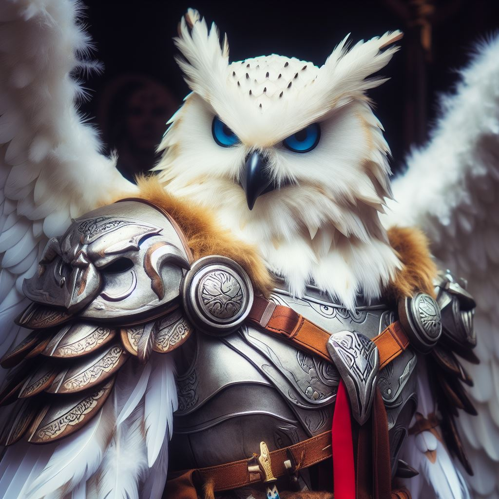
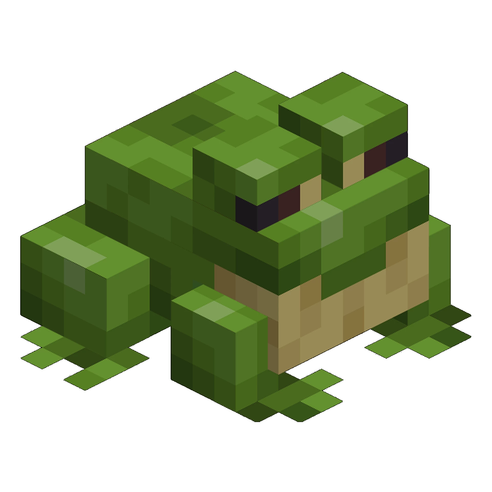
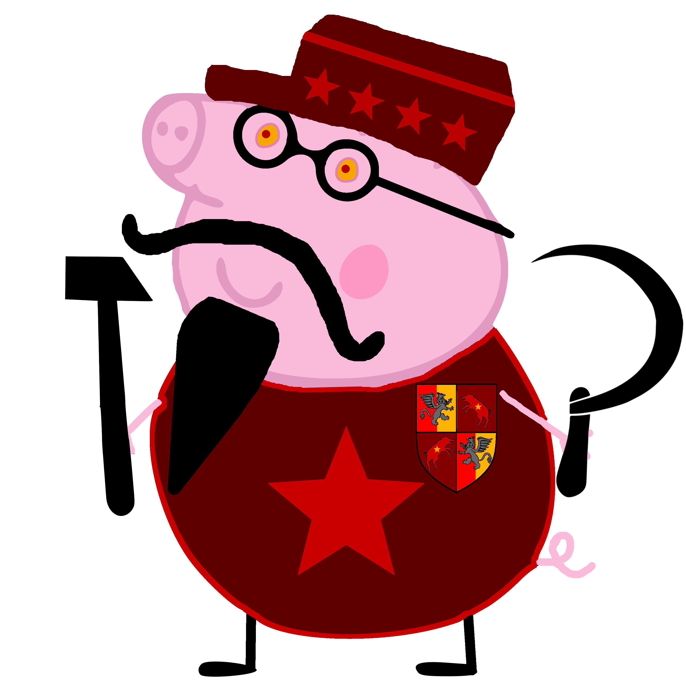
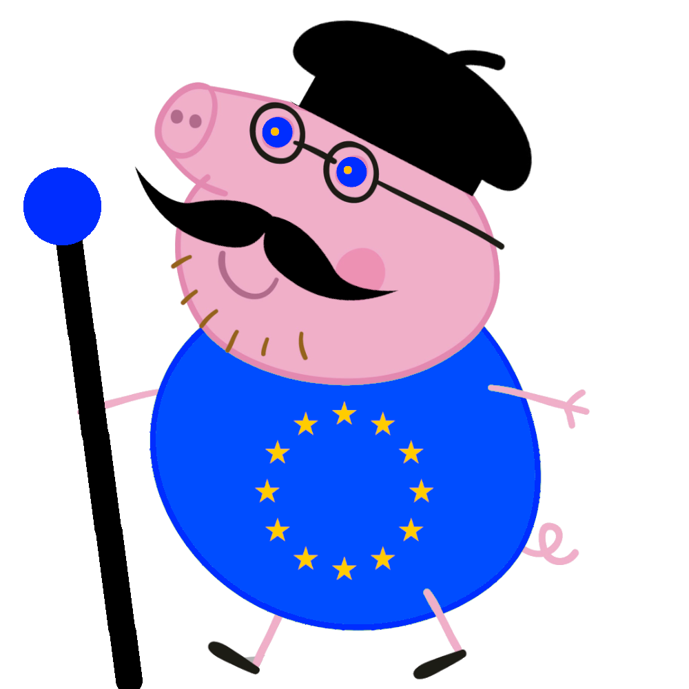

Bohaterowie i Antagoniści
Poniżej znajduje się lista znanych osobistości, których czyny zapisały się na kartach historii Felorostu.
Korona Krulestwa Multikont

Krul Artur I Gryfion
Monarcha Korony Krulestwa Multikont, Krul Multikont
Monarcha Korony Krulestwa Multikont, Krul Multikont

Puchacz Potężny
Lider Strigallorów
Lider Strigallorów

Margarita
Diuszessa Księstwa Margarity
Diuszessa Księstwa Margarity
Tatowie Świnkowie
Drzewo genealogiczne Tatów Świnków
Linia rodowa i powiązania Tatów Świnków
Linia rodowa i powiązania Tatów Świnków

Bolszewicki Tata Świnka
Najstarszy z Tatów Świnków
Najstarszy z Tatów Świnków

Demokratyczny Tata Świnka
Wielki Diuk Korony Krulestwa Multikont
Wielki Diuk Korony Krulestwa Multikont